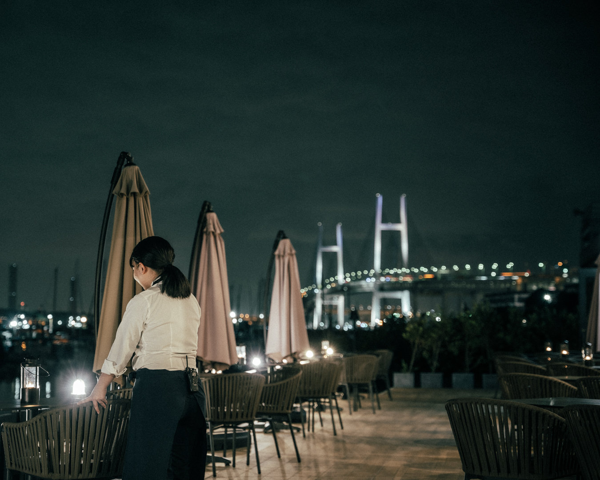
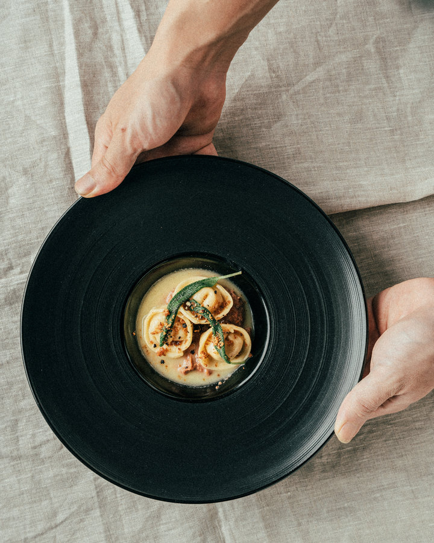
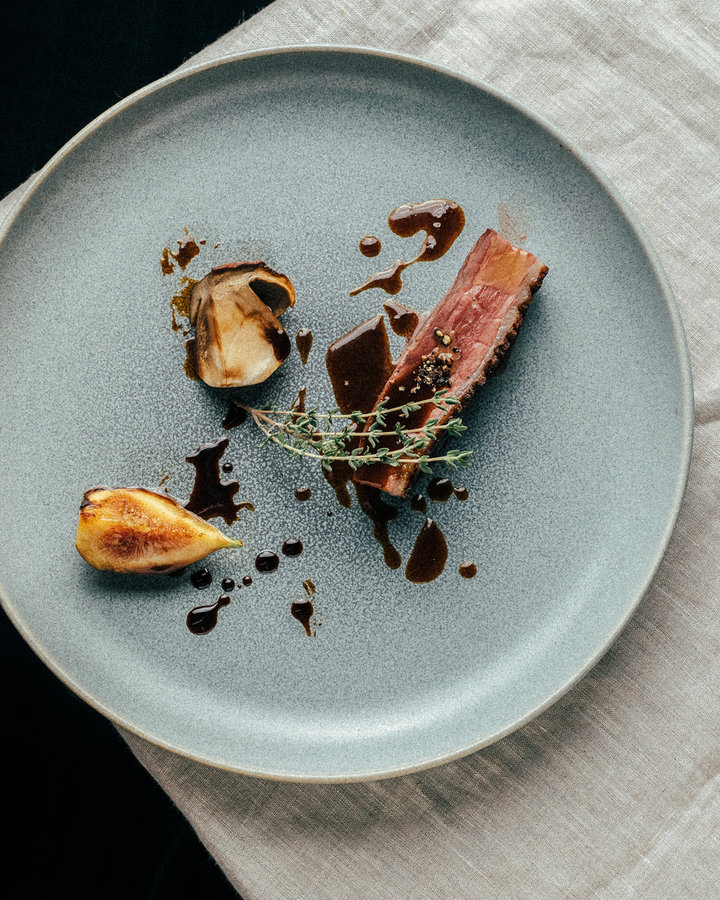
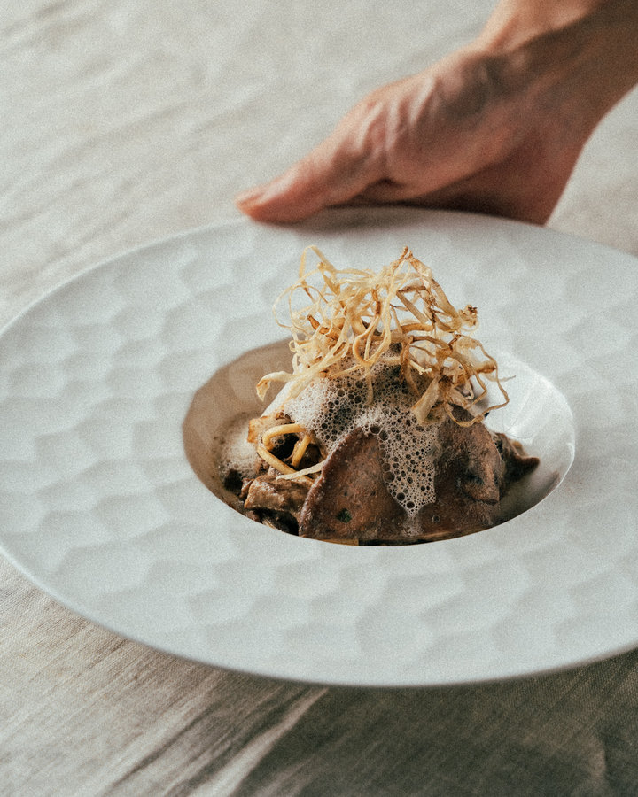
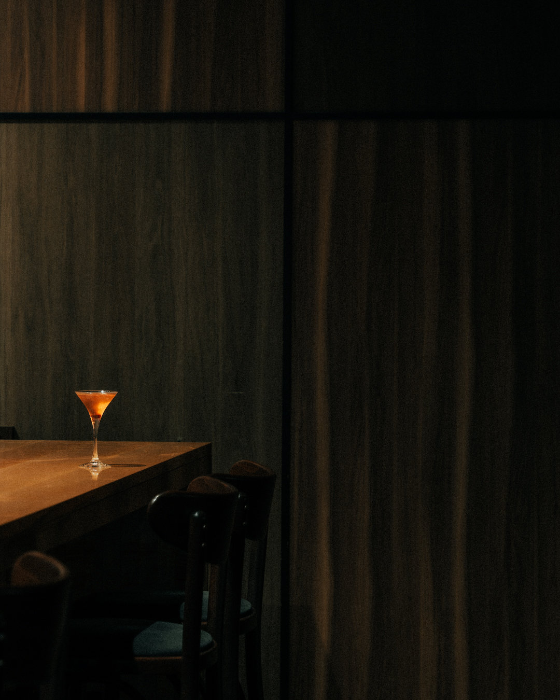

Weekday Dinner
TASTING COURSE
- 平日ディナー限定
- ¥6,000
お一人様・税込・サービス料別
- おひとり様ワンドリンクのご注文をお願いしています
- ＋プレミアムフリードリンク付き ¥8,500
- 予約可能日は、12月24日・25日を除きます
平日だけの特別な夜。肩ひじ張らずに楽しむテイスティングコース。
料理は一例です。内容は変わる場合があります。当日、単品の追加注文もできます。
横浜・新山下
OCEAN VIEW ITALIAN · YOKOHAMA
横浜・新山下の海沿いに佇む、海辺の隠れ家イタリアン Re : Journal。昼は開放的な景色、夜は水辺に灯る幻想的な夜景とともに、大切な人と過ごす時間を。
税込・サービス料別。TASTING COURSE はおひとり様ワンドリンクのご注文をお願いしています。
デートの席を予約するWebとお電話でご予約いただけます
Day to Night
新山下の海沿いに佇む、オーシャンビューのイタリアンレストラン。訪れる時間によって、海と街の表情が変わっていきます。
目の前に広がる海と、みなとみらいのビル群。明るい時間は、海辺のレストランならではの開放感を。
明るい空から夕暮れ、そして夜景へ。景色が移り変わっていくひとときを、食事とともに。日の入りの時刻は季節で変わるため、夕暮れが見られない時期もあります。

海に街の灯が溶けこむ、みなとみらいの夜景。間接照明の落ち着いた店内で、ふたりの時間をゆっくりと。

Terrace
みなとみらいの景色を一望できる、海のすぐそばのテラス席。海風を感じながら、昼は明るい海を、夜は灯りのともる水辺を眺めて過ごせます。
Course
平日の夜に気軽に楽しむテイスティングコースから、季節の食材で仕立てるシェフのコース、海を眺めるランチまで。料金はすべてお一人様・税込・サービス料別です。

Weekday Dinner
お一人様・税込・サービス料別
平日だけの特別な夜。肩ひじ張らずに楽しむテイスティングコース。
料理は一例です。内容は変わる場合があります。当日、単品の追加注文もできます。
Dinner
お一人様・税込・サービス料別
みなとみらいの夜景を眺めながら楽しむ、シェフの感性が織りなすディナーコース。一皿ごとに素材の持ち味を引き出し、香り・彩り・温度のバランスで構成されたメニューです。魚介と肉料理のメインを中心に、前菜からデザートまで、季節の流れをゆるやかに感じられます。食後にはコーヒーや紅茶とともに、ゆっくりと余韻をお楽しみください。
Lunch
お一人様・税込・サービス料別
海の景色を眺めながら、昼のデートに。スパークリングワインの乾杯から始まる、季節のランチコースです。




2026年秋のコースより。内容は季節で変わります。
コースは予約ページからお選びいただけます。
Drink & Bar
全46種のドリンクがフリーに。乾杯はスパークリングワインで、グラスワインは6種類。海をイメージしたモクテルもあるので、お酒が得意でない方も一緒に楽しめます。
TASTING COURSE（¥8,500）と Chef's Seasonal Selection – Dinner（平日 ¥12,500／土日祝 ¥14,500）に、プレミアムフリードリンク付きのプランがあります。

食後のバー利用もおすすめです。美酒や絶品のコーヒーとともに、ゆっくりと寛ぐ時間を。
Anniversary
予約ページのオプションから、メッセージドルチェプレートやお祝いの花束を追加できます。食事の結びに、もうひとつのサプライズを。
オプションの料金も税込・サービス料別です。
Voices
夜景が綺麗なお店に行きたいね〜。ということでこちらへ。店内は間接照明で落ち着いた雰囲気で、大きな窓からみなとみらいの夜景を一望できてとても素敵な空間でした。
今回はテラスを利用させていただきました。みなとみらいの景色が一望できるテラスの雰囲気がよく海風が吹くと気持が良かったです。店内の雰囲気インテリアも統一感があってオシャレでした。
元町中華街の喧騒から少し離れたところにある、隠れ家的なイタリアンレストラン。……ちょうど予約した時間が17:00ということもあり、お店にいる間に明るい時間、サンセット、そして夜景までを美味しいイタリアンとともに楽しむことが出来ました。
Google マップに投稿された口コミから一部を抜粋しています（2026年11月時点。省略箇所は……で示しています）。景色の見え方は、季節や時間帯、お席によって異なります。
| ご来店日の2日前 | コース料金の50% |
|---|---|
| 前日・当日 | コース料金の100% |
| 前日 | ランチ ¥1,000 ディナー ¥3,000 |
|---|---|
| 当日 | ランチ ¥2,000 ディナー ¥6,000 |
ご連絡なくキャンセルされた場合は、想定客単価の100%を申し受けることがあります。
Before booking
Access
FAQ
テラス席は事前のご予約を承っていません。ご利用当日の10:30から、お電話で先着順に受け付けています。天候によってはご案内できない場合があります。店内のお席をご予約のお客様も、当日のお電話でテラス席へ移動いただけます（先着順・天候次第）。
お席のご要望は、ご希望に添えない場合があります。窓際のお席も確約はできませんので、あらかじめご了承ください。
平日ディナー限定の TASTING COURSE（お一人様 ¥6,000、税込・サービス料別）がおすすめです。シグネチャーボロネーゼやティラミスなど全8品（料理は一例）を、肩ひじ張らずにお楽しみいただけます。おひとり様ワンドリンクのご注文をお願いしています。
プレミアムフリードリンクには、海をイメージしたノンアルコールのモクテルもあります。ランチの Chef's Seasonal Selection – Lunch は、はじまりの一杯のスパークリングワインをアルコール・ノンアルコールから選べます。
どのプランも、ご利用はご予約のお時間から2時間です。
首都高速 神奈川3号狩場線の新山下出口から1分です。専用駐車場があり（Re : Journal のロゴ入りの黄色いコーンが目印）、満車の場合は近隣の有料駐車場をご利用ください。
コースのご予約は、ご来店日の2日前はコース料金の50%、前日・当日は100%を申し受けます。お席のみのご予約は、お一人様あたり前日はランチ ¥1,000・ディナー ¥3,000、当日はランチ ¥2,000・ディナー ¥6,000です。
Reservation
デートのお席は、Webとお電話でご予約いただけます。
＊表示の料金はすべて税込・サービス料別です。
＊テラス席は事前のご予約ができません。ご利用当日の10:30からお電話で受け付けています（天候次第）。
＊お電話の受付は10:30からです。